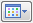

Library tab
The Library tab and Teamcenter Library tabs are members of the docking window tab set in Draft. It displays Draft documents you can place as symbols, and model files that you can drag onto the sheet to create drawing views. You can also double-click a file displayed on the Library tab to open that file in Solid Edge.
When no document is selected, you can use the commands on the shortcut menu to change how the file and folder list is displayed. You can use the Insert Symbol As shortcut menu to specify how you want to place an object selected on the Library tab into an open draft document.
When a document is selected, you can use the commands on the shortcut menu to copy, delete, or rename a document.
- Show Blocks

-
Displays the blocks used in the active document in the lower pane of the Library tab. As you click each block name, a preview of the block graphics is displayed in the Preview Area at the bottom of the docking window.
- Home
-
For managed documents, sets the look-in location to your Home folder.
- Go to Last Folder Visited
-
Returns to the last folder that you visited. The tooltip for this folder displays the name of the last folder you visited.
- Up One Level
-
Moves the Look In folder up one level.
- Create New Folder
-
Displays the Create New Folder dialog box, so you can create a new folder.
- Views

-
Controls the display method for the listed documents.
- Thumbnails
-
Displays a thumbnail-sized image of the contents of each document or folder.
- Large Icons
-
Displays large icons for the documents.
- Small Icons
-
Displays small icons for the documents.
- List
-
Lists the names of the documents in columns.
- Details
-
Displays a detailed view of the folder contents. The columns displayed include Name, Size, and Modified.
- Search
-
Displays the Search dialog box so you can define search criteria.
- Look In
-
Displays the contents of the drive and folder which is currently listed. You can click the arrow to browse to a different drive or folder.
- List Area
-
Displays all documents in the selected folder. You can use the Views button to control how the list of documents is displayed.
- Preview Area
-
Displays an image of the selected document. You can use the Preview dialog box to specify whether the image is a bitmap or an interactive preview.
How do I
Set the symbol placement methodCreate a symbol
Place a symbol
Edit symbol properties
Format Symbol Elements
Manipulate a symbol
Convert a Symbol to a Group
Learn more
Symbols overviewSymbol placement methods
Look up more details
Insert Symbol As commandCopy to Library command
Copy to Library command bar
Convert Symbol to Group Command
Symbol Properties Dialog Box